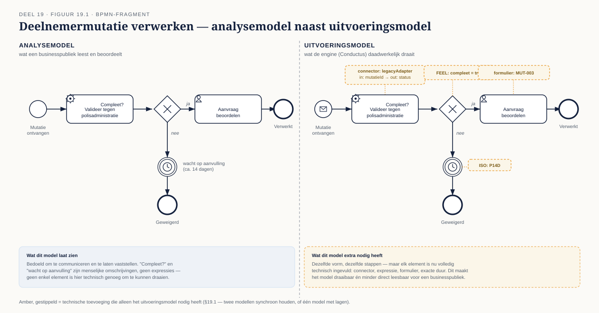
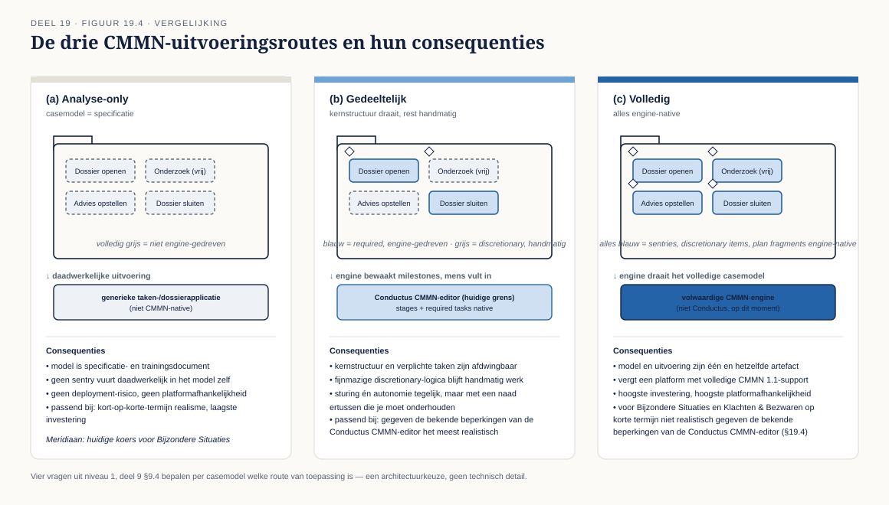
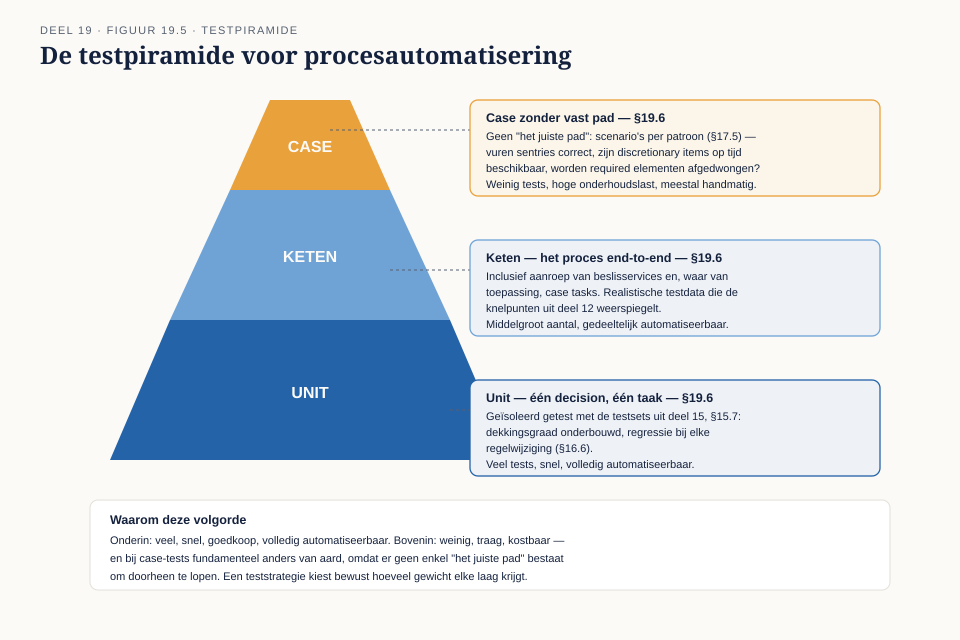
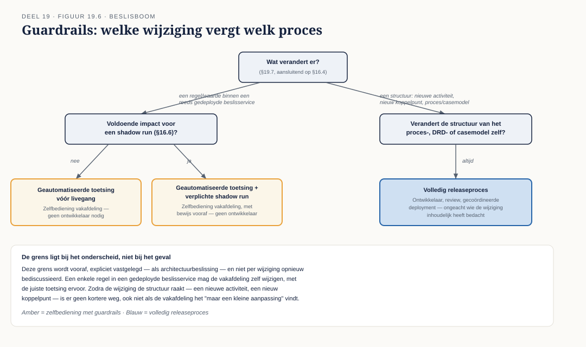

Deel 19 — Van model naar uitvoering
Slidedeck · Ductus-cursus BPMN, CMMN & DMN · niveau 2 · deel 19 van 30 · 28 slides
Slide 1 — Titelslide
Van model naar uitvoering — Deel 19, Dagdeel 1
Beeldmerk, "Twee dagdelen — vandaag: het eerste echte deployen"
Spreeknotitie: Waarschuw vooraf voor technische frictie — dat hoort erbij.
Slide 2 — Leerdoelen
Na deze twee dagdelen kun je…
Vijf leerdoelen uit de reader
Spreeknotitie: Vandaag: het gat tussen analyse en uitvoering, BPMN executable, en deployen.
Slide 3 — Twee soorten model
Analysemodel — versus uitvoeringsmodel

Figuur 19.1, leeg
Spreeknotitie: Alles wat je tot nu toe maakte, was analyse.
Slide 4 — Wat er extra nodig is
Elke service task, elke conditie, elke timer — volledig ingevuld
Figuur 19.1, ingevuld
Spreeknotitie: Geen "hetzelfde met wat extra's" — een aanzienlijke uitbreiding.
Slide 5 — Twee modellen, of één met lagen
Synchroon houden — of één bestand, verrijkt
Twee benaderingen naast elkaar
Spreeknotitie: In Conductus: één BPMN-bestand met Flowable-extensies.
Slide 6 — Opdracht 1
Maak een analysemodel uitvoerbaar — documenteer elke toevoeging
Werkboekverwijzing, timer 40 minuten
Spreeknotitie: Individueel. Controleer of correlatie en timers niet vergeten worden.
Slide 7 — Service tasks en connectoren
Endpoint, authenticatie, in- en outputmapping
 Figuur 19.2
Figuur 19.2
Spreeknotitie: Bij Meridiaan: een aanroep naar het legacy-koppelvlak.
Slide 8 — User tasks en formulieren
Waar het analysemodel concreet wordt
Een formulier naast de bijbehorende activiteit
Spreeknotitie: De resource-koppeling uit deel 14, nu technisch gemaakt.
Slide 9 — Expressies, timers, correlatie
Van beschrijving naar exacte specificatie
Drie voorbeelden: FEEL-expressie, ISO 8601-duur, correlatie-expressie
Spreeknotitie: "Wacht 14 dagen" wordt `P14D`.
Slide 10 — Foutafhandeling die werkt
Foutcodes vertalen naar BPMN-errortypen
Een tabel: systeemfoutcode → BPMN error type → retry-strategie
Spreeknotitie: Wat in het analysemodel een concept was, is nu een specificatie.
Slide 11 — Voorbereiding
Omgeving controleren vóór we starten
Checklist: toegang, deployrechten, testdata
Spreeknotitie: Individueel, begeleid — net als bij deel 3 van niveau 1.
Slide 12 — Opdracht 2
Deploy een proces en een decision — start een instantie
Werkboekverwijzing, ruime tijd
Spreeknotitie: Individueel in Conductus. Probeer eerst zelf te debuggen vóór je hulp vraagt.
Slide 13 — Wat er vastliep
Bevindingen delen
Open plenaire ronde
Spreeknotitie: Waardevolle informatie — geen falen.
Slide 14 — Einde dagdeel 1
Volgende keer: contracten, architectuurkeuzes, testen
Korte samenvatting
Spreeknotitie: Terugblik bij de start van dagdeel 2.
Slide 15 — Titelslide
Van model naar uitvoering — Deel 19, Dagdeel 2
Beeldmerk
Spreeknotitie: Korte terugblik op dagdeel 1's deploy-ervaring.
Slide 16 — Van decision naar beslisservice
Een zelfstandig aan te roepen component
 Figuur 19.3, leeg
Figuur 19.3, leeg
Spreeknotitie: Los van de processen die hem gebruiken.
Slide 17 — Deployment en versionering
Vaste versie, of altijd de laatste
Twee aanroepers met een verschillende keuze
Spreeknotitie: Directe link met het regelbeheervraagstuk uit deel 16.
Slide 18 — Het aanroepcontract
Wat je aanlevert, wat je terugkrijgt
Figuur 19.3, ingevuld met het contract
Spreeknotitie: Dit lost het impactanalyse-probleem uit deel 18 op.
Slide 19 — Opdracht 3
Stel het beslisservice-contract op
Werkboekverwijzing, timer 30 minuten
Spreeknotitie: Individueel.
Slide 20 — CMMN in engines, nog een keer
Ondersteuning verschilt sterk — en dat is bekend terrein
Herhaling van niveau 1, deel 9, en de eerdere Conductus-afspraken
Spreeknotitie: Kort — dit is geen nieuwe informatie, wel een nieuwe toepassing.
Slide 21 — Drie routes
Analyse-only · gedeeltelijk · volledig

Figuur 19.4
Spreeknotitie: Voor Bijzondere Situaties: waarschijnlijk (a) of (b), gegeven wat je al weet over Conductus.
Slide 22 — Opdracht 4
Pas de vier vragen toe — schrijf het architectuuradvies
Werkboekverwijzing, timer 30 minuten
Spreeknotitie: Individueel. Verbind expliciet met het eerdere gesprek over de CMMN-editorkeuze.
Slide 23 — Eén taal, drie plekken
FEEL in DMN, BPMN-condities, en CMMN-sentries
Kort overzicht
Spreeknotitie: Verlaagt de leercurve voor de business engineer.
Slide 24 — Drie testniveaus
Unit · keten · case zonder vast pad

Figuur 19.5
Spreeknotitie: Casetesten zijn scenario's, geen checklist.
Slide 25 — Opdracht 5
Ontwerp de volledige teststrategie — de kerndeliverable
Werkboekverwijzing, eisen op een rij
Spreeknotitie: Individueel, start nu, afronden buiten de les.
Slide 26 — Waar de grens ligt
Regelwijziging — of structuurwijziging

Figuur 19.6, beslisboom
Spreeknotitie: Vastgelegd vooraf, niet per geval bediscussieerd.
Slide 27 — Opdracht 6
Bepaal de guardrails voor drie soorten wijziging
Werkboekverwijzing, timer 15 minuten
Spreeknotitie: Tweetallen.
Slide 28 — Opdracht 7, vooruitblik
Stellingen — en dan procesmining
Werkboekverwijzing, aankondiging deel 20
Spreeknotitie: Voor het eerst meet je of je eigen modellen kloppen met de werkelijkheid, met Retroductus.